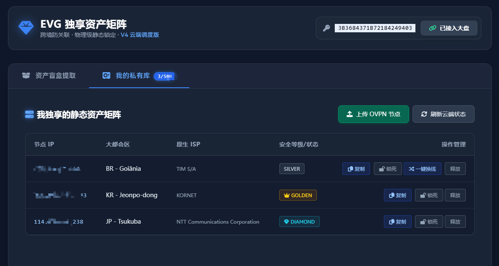
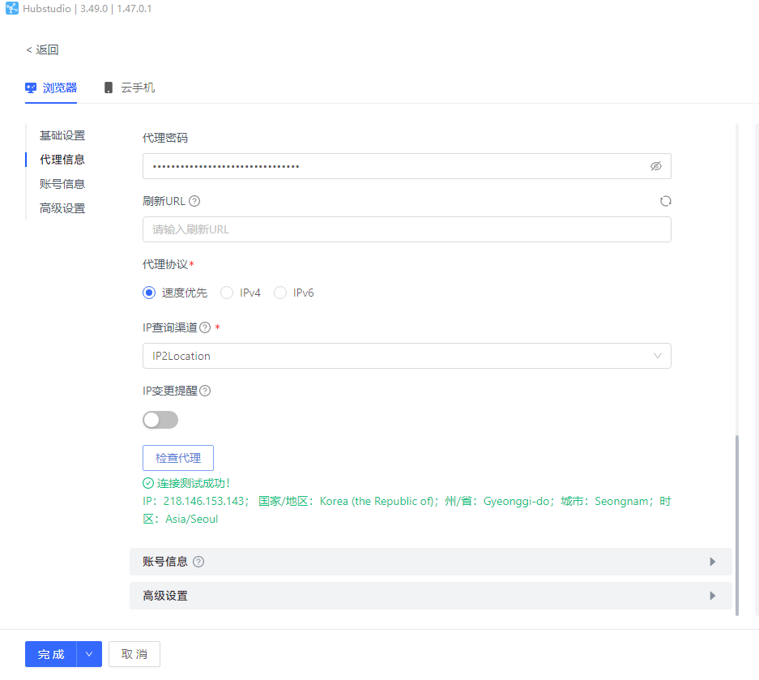
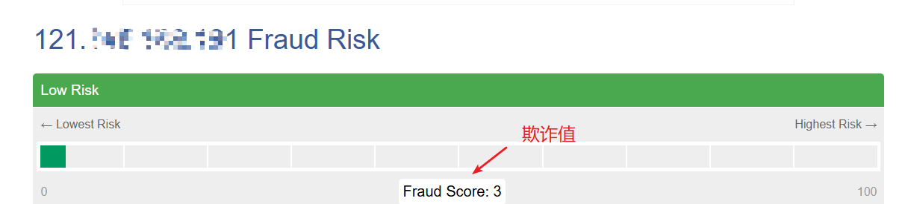
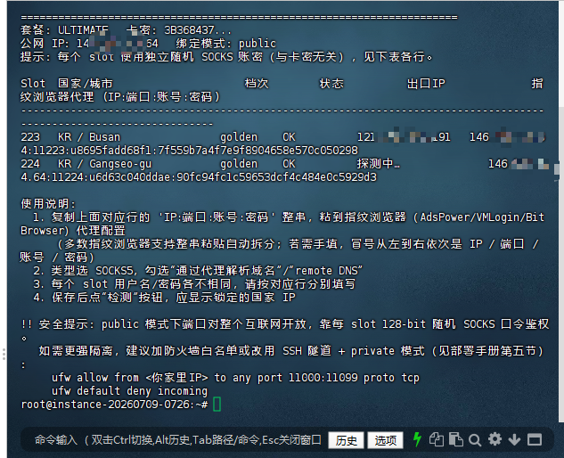
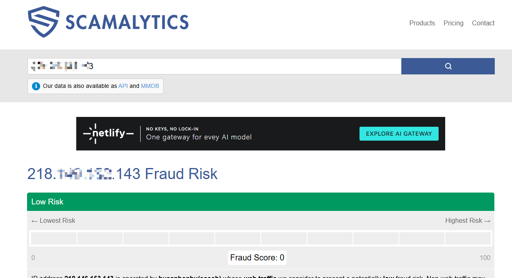
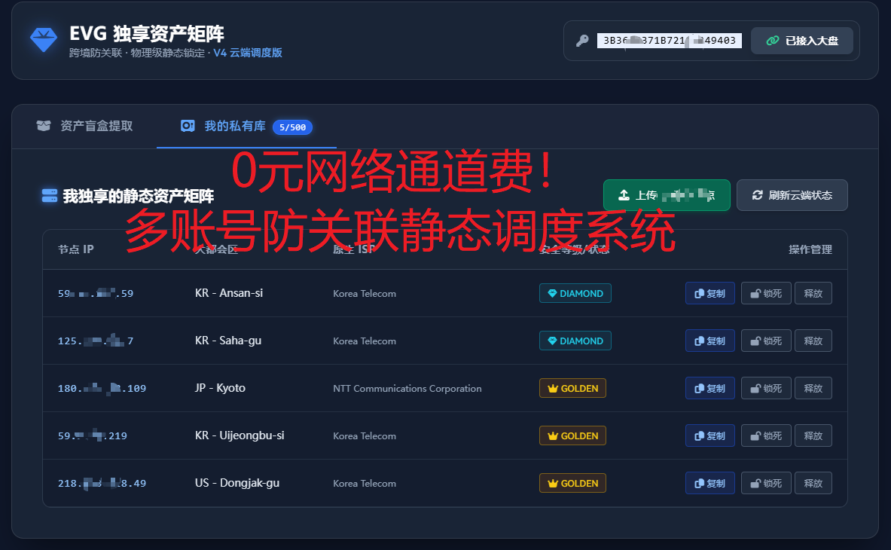

别再每天测速、选线路、换 IP 了。把网络交给系统，把时间留给工作。
所有判断都在后台完成，你只需要做一件事——点击连接。
打开插件或客户端，点击「智能连接」
→系统综合分析线路质量、稳定性与场景匹配度
→自动为你选择当前最合适的一条线路
→连接后持续监测，异常时自动恢复
不是功能堆砌，而是围绕「稳定、省心、低成本」设计。
主线路断线后，系统自动在同城同运营商范围内匹配替补。找不到就宁可死等原线路恢复，绝不跨城乱跳，平台无感知。
系统自动采集全球真实住宅线路，不按流量、不按线路数收费。管理 5 个店和 500 个店，网络成本都是 0。
钻石 双重风控检测极品线路 · 黄金 多轮探活验证线路 · 极速 住宅级延迟优选
锁定的优质线路断线后，系统死等不乱换。一旦原线路在全球任意位置重新上线，秒切回来，用户端无感知。
网卡焊死 + 双栈防火墙，断线 0.001 秒锁死所有出海通道，杜绝毫秒级泄露导致的封店。
买线路前先跑一遍风控检测。市面上不少"挂羊头卖狗肉"的垃圾线路，一测便知。
不是概念图，是系统真实运行界面、IP 质量检测与 VPS 部署实况。






一套系统，适配不同需求，而非一套方案通吃所有人。
稳定访问 ChatGPT、Claude、Gemini
TikTok、Amazon、Facebook、Google Ads
远程办公、团队统一策略管理
浏览网页、学习、视频、娱乐
基础功能永久可用，可选年度更新包获取升级与线路库刷新。
包含钻石 + 黄金 + 极速全部线路等级，支持代部署（+¥100-300）
| 版本 | 环境数 | 买断价 | 年度更新 |
|---|---|---|---|
| 🎯 体验版 | 1 环境 | ¥19.9/月 | 试用 |
| 🔶 入门版 | 1 环境 | ¥199 | ¥69/年 |
| 🔷 标准版 | 3 环境 | ¥499 | ¥99/年 |
| 💎 专业版 | 5 环境 | ¥699 | ¥149/年 |
| 🏆 旗舰版 | 10 环境 | ¥1,099 | ¥249/年 |
| 👑 超级版 | 20 环境 | ¥1,899 | ¥349/年 |
| 🚀 无限版 | 无限 | ¥3,999 | ¥449/年 |
一行代码拿到代理，自动化批量管理账号。官方 SDK 已封装好，接入即用。
调用 allocate 一行返回可用代理串，自动完成选点与锁定
断线自愈 + 一键换线，同城同运营商兜底，平台无感知
Python / Node.js / PHP 均已封装，鉴权与错误处理开箱即用
# 申请一个日本黄金代理（3 行搞定） from evg_proxy import EVGClient client = EVGClient(api_key="YOUR_API_KEY") proxy = client.allocate(country="JP", tier="golden") # { 'ip':'168.110.44.252','port':11388,'user':'u64286...','pass':'a4dfe5...' }
| 你的环境数 | API 权限 | 说明 |
|---|---|---|
| 10 个及以上 | 免费赠送 | 环境多，自动化才真正省时间 |
| 10 个以下 | +¥100 永久 | 环境少手动也不麻烦 |
指纹浏览器管「浏览器环境隔离」，EVG 管「底层线路调度」，两者搭配使用效果最佳。EVG 也可以独立使用（配合桌面客户端或手机客户端）。
系统内置自愈机制——主线路断线后自动在同城同运营商范围内匹配替补，找不到就死等原线路恢复。平台看来你就是一个偶尔断电重启路由器的真实住户。
可以。提供代部署服务（+¥100-300），帮你装好、调通、交付。或者按教程执行 2 条命令即可完成安装。
基础功能永久可用。年度更新包（非必须）提供：系统版本升级 + 线路库持续刷新 + 新功能解锁。
覆盖全球多个主流国家/地区，包括日本、韩国、美国、欧洲等。系统会根据你的目标市场自动优选最佳线路。